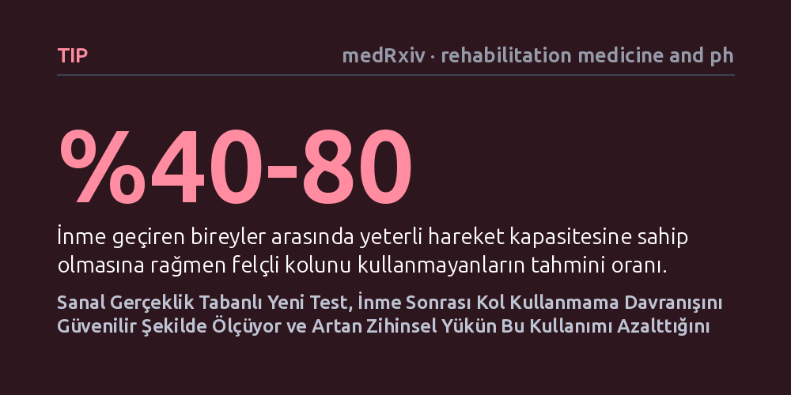

TIP · medRxiv · rehabilitation medicine and physical therapy · 2026-09-08
Araştırmacılar, inme sonrası yeterli güce rağmen kolu kullanmama davranışını pratik biçimde ölçmek amacıyla sanal gerçeklik tabanlı yeni bir test geliştirdi. Elli bir hasta üzerindeki denemeler, sistemin bu durumu güvenilir şekilde tespit ettiğini ve artan zihinsel yükün kol kullanımını azalttığını gösterdi.
İnme sonrası kolun kullanılmamasının yalnızca kas gücü eksikliğinden değil zihinsel yükten de kaynaklandığını göstererek, kliniklerde dakikalar içinde uygulanabilecek pratik ve kişiselleştirilmiş rehabilitasyonun önünü açıyor.

İnme geçiren bireylerin yaklaşık yüzde 40 ila 80'i, kollarında aslında yeterli hareket kapasitesi ve kas gücü bulunmasına rağmen günlük yaşamda o kolu kullanmaktan vazgeçer. Tıpta 'kolu kullanmama' (arm nonuse) veya öğrenilmiş kullanmama olarak bilinen bu durum, hastaların fiziksel potansiyellerinin çok altında kalmasına ve temel ihtiyaçlarında başkalarına bağımlı hale gelmesine yol açar. Sorun yalnızca kaslardaki felçten kaynaklanmaz; zihinsel odaklanma ve motor planlama arasındaki karmaşık etkileşim bu tabloyu derinleştirir.
Ne var ki bu davranışı klinik ortamda doğru saptamak bugüne kadar hekimler için ciddi bir engeldi. Mevcut ölçüm yöntemleri ya pahalı ve hantal özel laboratuvar düzenekleri, ya uzun süren hazırlık aşamaları ya da hastayı günlerce takip eden hareket sensörleri gerektiriyordu. Bu pratik kısıtlılıklar nedeniyle klinisyenler, hastanın kolunu fiziksel güçsüzlükten mi yoksa davranışsal bir ihmalden ötürü mü kullanmadığını hızlıca ayırt edemiyordu.
Araştırmacılar, bu pratik kısıtlamaları aşmak amacıyla sanal gerçeklik başlığıyla çalışan 'VR-NonUse' adını verdikleri yeni bir değerlendirme aracı geliştirdi. Sistem, hastanın doğal uzanma hareketlerini sanal ortamda hassas biçimde kaydederken görevleri hem zihinsel (bilişsel) hem de motor zorluk bakımından üç farklı koşula ayırıyor. Böylece hastanın dikkati ikincil bir göreve yöneldiğinde ya da hareket karmaşıklaştığında felçli kolunu kullanmayı bırakıp bırakmadığı anlık olarak test edilebiliyor.
Geliştirilen yöntemin geçerliliğini ve güvenilirliğini sınamak için kronik inme geçmişi bulunan 51 hasta ile 23 sağlıklı kontrol deneği çalışmaya dahil edildi. Katılımcılar sanal gerçeklik ortamındaki görevleri tamamlarken sistemin kullanım kolaylığı ve tolere edilebilirliği incelendi. Ayrıca elde edilen sonuçlar, literatürde kabul görmüş geleneksel kullanmama ölçekleri ve saf motor bozukluk testleriyle karşılaştırıldı.
Deney sonuçları, sanal gerçeklik aracının hastalar tarafından rahatça tolere edildiğini ve klinik ortamlara kolayca uyarlanabilecek düzeyde pratik olduğunu ortaya koydu. En dikkat çekici bulgu, zihinsel talebin arttığı anlarda hastaların felçli kollarını kullanma oranının belirgin biçimde düşmesiydi. Yani hasta aynı anda birden fazla zihinsel işlem yapmak zorunda kaldığında, kapasitesi olmasına rağmen etkilenen kolunu tamamen unutup sağlam koluna yöneliyordu.
İstatiksel analizler, sanal gerçeklik testinin ölçtüğü değerlerin mevcut standart kullanmama ölçekleriyle güçlü bir uyum sergilediğini doğruladı. Dahası bu test, hastadaki saf kas gücü kaybı ile doğrudan davranışsal kullanmama durumunu birbirinden başarıyla ayrıştırmayı başardı. Araştırmacılar, özellikle kısa süreli ve zihinsel açıdan zorlayıcı bir görevin, hastadaki kol kullanmama düzeyini tespit etmede son derece tutarlı ve güçlü bir ölçüm sunduğunu saptadı.
Bu çalışma, inme rehabilitasyonunda uzun yıllardır süregelen pratik bir ölçüm açığını kapatma potansiyeline sahip. Hastaya zahmetli sensörler bağlamadan ya da günlerce süren gözlemlere başvurmadan, klinikte uygulanacak birkaç dakikalık sanal gerçeklik testiyle kol kullanmama derecesi net biçimde haritalandırılabiliyor. Bu sayede fizyoterapistler, her hastanın zihinsel ve motor eşiğine uygun kişiselleştirilmiş egzersiz programları tasarlayabilir.
Sonuç olarak zihinsel yükün kol kullanımını nasıl baskıladığını erken aşamada anlamak, inme hastalarının bağımsızlıklarını yeniden kazanmalarında kritik bir rol oynayabilir. Yine de bu aracın yaygın klinik kullanıma girebilmesi için farklı merkezlerde ve daha geniş hasta kitlelerinde sınanması büyük önem taşıyor.